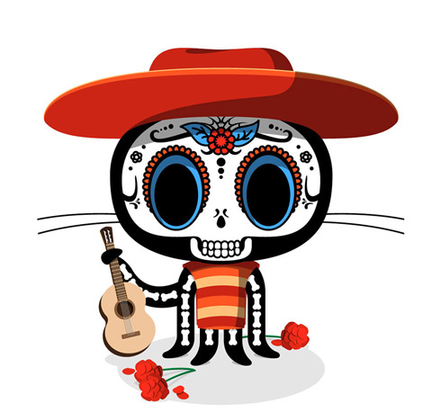

All About Github
- Q. What is a version control system?
- A. Software tools that help software teams manage changes to source code over time
- Q. What is Git?
- A. Git is a smature, actively maintained open source project originally developed in 2005 by Linus Torvalds
- Q. What is Github?
- A. GitHub is a for-profit company that offers a cloud-based Git repository hosting service
- Q. What is the difference between Git and Github?
- A. Git is a version control system that lets you manage and keep track of your source code history. GitHub is a cloud-based hosting service that lets you manage Git repositories
- Q. What company owns it now?
- A. Github Inc (GitHub) is now a subsidiary of Microsoft Corp
- Q. How much does a Github account cost?
- A. GitHub offers free and paid accounts, paid accounts starting at 20 dollars a month
- Q. What is the Octocat?
- A. Octocat is the mascot of GitHub

Git/GitHub Terms:
- Repository: a place or receptacle where things are or may be stored
- Commit:an operation which sends the latest changes of the source code to the repository, making these changes part of the head revision of the repository
- Fork: when developers take a copy of source code from one software package and start independent development on it, creating a distinct and separate piece of software
- Push: a function that adds one or more elements to the end of an array or "top" of a stack
- Pull Requests: an event that takes place in software development when a contributor/developer is ready to begin the process of merging new code changes with the main project repository
- Workflows: a system for managing repetitive processes and tasks which occur in a particular order
- Issues: any situation that occurs that is unexpected or prevents something from occurring
- Raw Button: opens the file in a raw form, meaning that any HTML formatting disappears
- Blame Button: displays the details of the author who last modified or added each line of code in a given file along with the commit id of modification
|